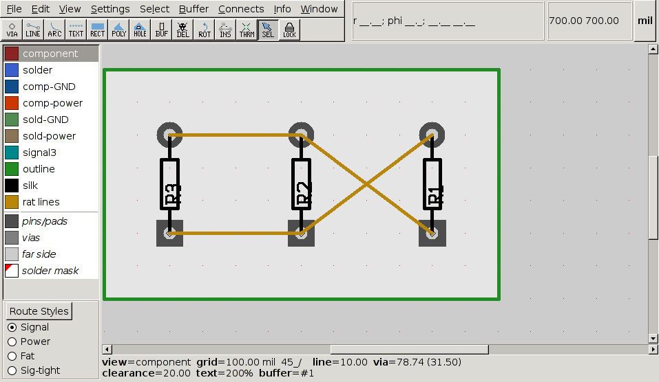
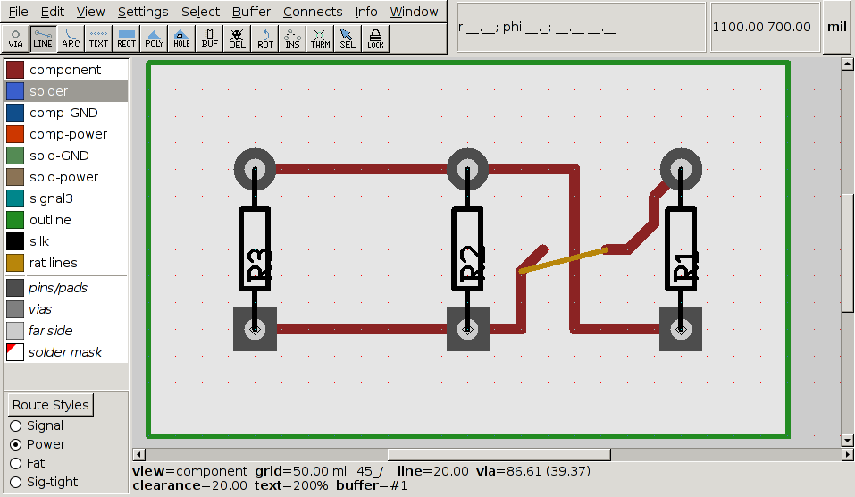
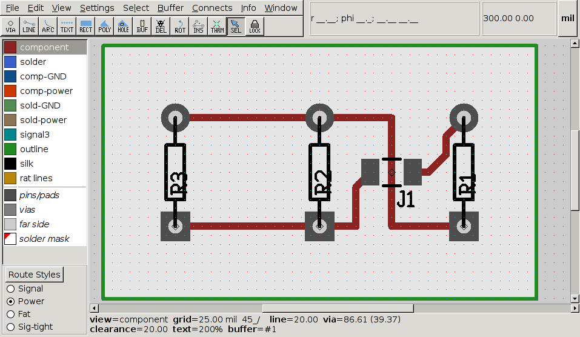

| Main | News | People | Events | pcb-rnd |
|---|
The patch introduces a new pin flag intconn(g) which marks the pin to have internal connections in group g. If there are multiple pins using the same g value within a single element, they are internally connected. In other words, g is a group (or net name) within the element and pins can join to one of the numbered groups (or internal nets). The value of g shall be between 1 and 255, 0 means no internal connection (equivalent to the case when intconn(0) is omitted).
When pin numbers are displayed (key 'd'), internal connection groups are written in square brackets, e.g. "2 [9]" means "pin 2, internally connected to group 9".
Combined with the [nonetlist] patch, this solves the "0-ohm 1206 jumper" problem: the element should be marked as nonetlist, with both pins set intconn(1) - this will result in a 2 pad element, pads internally connected, that can be part of any one network without causing short.



Pin[40000 60000 6000 3000 6600 2800 "2" "2" "square,intconn(9)"] Pin[40000 50000 6000 3000 6600 2800 "3" "3" "square"] Pin[40000 40000 6000 3000 6600 2800 "4" "4" "square,intconn(9)"]Mainline PCB will load the design ignoring internal connections - this may introduce new rats.
Mainline PCB doesn't save intconn() and elements are embedded in the file - once the design is loaded and saved with mainline PCB, internal connection info is lost.